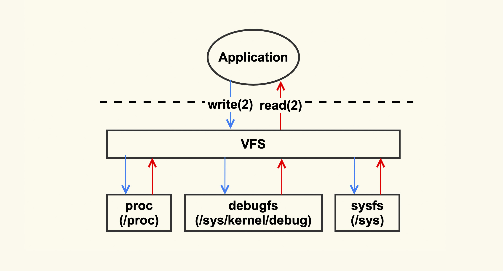
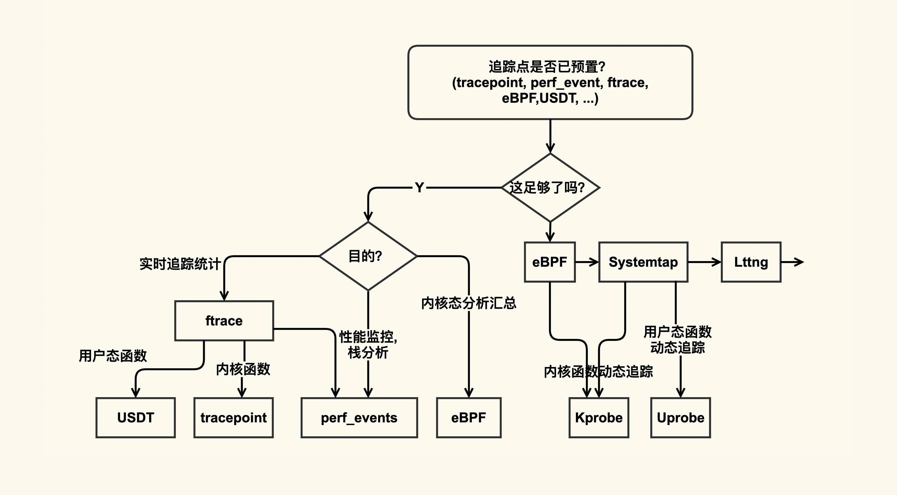
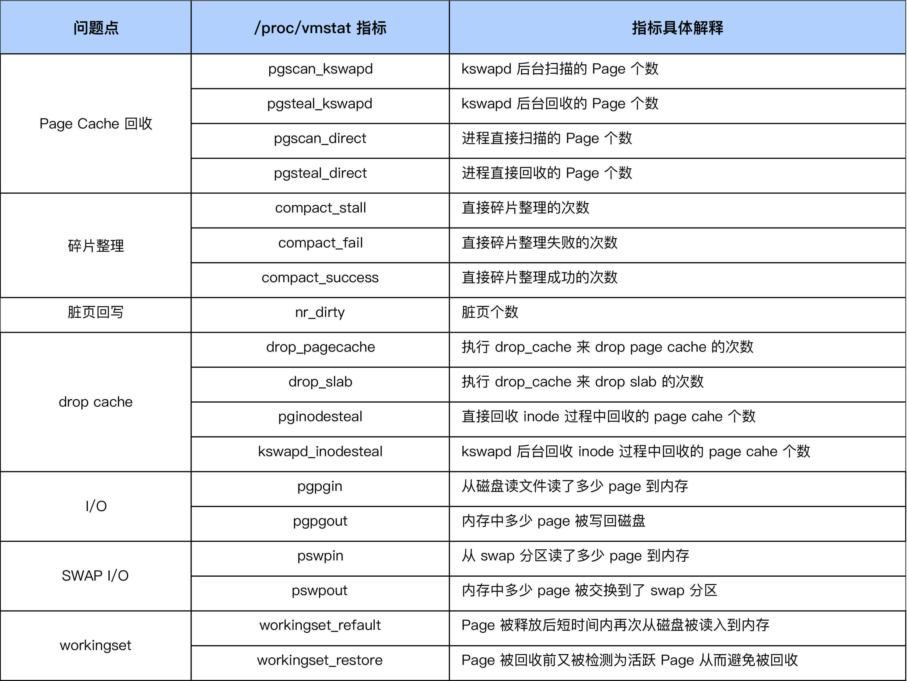
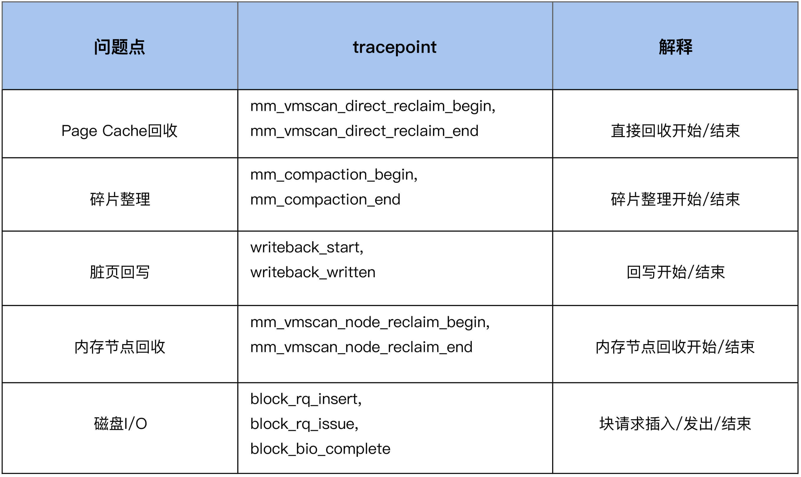

- 00 开篇词 如何让Linux内核更好地服务应用程序？.md.html
- 01 基础篇 如何用数据观测Page Cache？.md.html
- 02 基础篇 Page Cache是怎样产生和释放的？.md.html
- 03 案例篇 如何处理Page Cache难以回收产生的load飙高问题？.md.html
- 04 案例篇 如何处理Page Cache容易回收引起的业务性能问题？.md.html
- 05 分析篇 如何判断问题是否由Page Cache产生的？.md.html
- 06 基础篇 进程的哪些内存类型容易引起内存泄漏？.md.html
- 07 案例篇 如何预防内存泄漏导致的系统假死？.md.html
- 08 案例篇 Shmem：进程没有消耗内存，内存哪去了？.md.html
- 09 分析篇 如何对内核内存泄漏做些基础的分析？.md.html
- 10 分析篇 内存泄漏时，我们该如何一步步找到根因？.md.html
- 11 基础篇 TCP连接的建立和断开受哪些系统配置影响？.md.html
- 12 基础篇 TCP收发包过程会受哪些配置项影响？.md.html
- 13 案例篇 TCP拥塞控制是如何导致业务性能抖动的？.md.html
- 14 案例篇 TCP端到端时延变大，怎样判断是哪里出现了问题？.md.html
- 15 分析篇 如何高效地分析TCP重传问题？.md.html
- 16 套路篇 如何分析常见的TCP问题？.md.html
- 17 基础篇 CPU是如何执行任务的？.md.html
- 18 案例篇 业务是否需要使用透明大页：水可载舟，亦可覆舟？.md.html
- 19 案例篇 网络吞吐高的业务是否需要开启网卡特性呢？.md.html
- 20 分析篇 如何分析CPU利用率飙高问题 ？.md.html
- 加餐 我是如何使用tracepoint来分析内核Bug的？.md.html
- 结束语 第一次看内核代码，我也很懵逼.md.html
- 捐赠
05 分析篇 如何判断问题是否由Page Cache产生的？
你好，我是邵亚方。
在前面几节课里，我们讲了Page Cache的一些基础知识，以及如何去处理Page Cache引发的一些问题。这节课我们来讲讲，如何判断问题是不是由Page Cache引起的。
我们知道，一个问题往往牵扯到操作系统的很多模块，比如说，当系统出现load飙高的问题时，可能是Page Cache引起的；也可能是锁冲突太厉害，物理资源（CPU、内存、磁盘I/O、网络I/O）有争抢导致的；也可能是内核特性设计缺陷导致的，等等。
如果我们没有判断清楚问题是如何引起的而贸然采取措施，非但无法解决问题，反而会引起其他负面影响，比如说，load飙高本来是Page Cache引起的，如果你没有查清楚原因，而误以为是网络引起的，然后对网络进行限流，看起来把问题解决了，但是系统运行久了还是会出现load飙高，而且限流这种行为还降低了系统负载能力。
那么当问题发生时，我们如何判断它是不是由Page Cache引起的呢？
Linux问题的典型分析手段
Linux上有一些典型的问题分析手段，从这些基本的分析方法入手，你可以一步步判断出问题根因。这些分析手段，可以简单地归纳为下图：

从这张图中我们可以看到，Linux内核主要是通过/proc和/sys把系统信息导出给用户，当你不清楚问题发生的原因时，你就可以试着去这几个目录下读取一下系统信息，看看哪些指标异常。比如当你不清楚问题是否由Page Cache引起时，你可以试着去把/proc/vmstat里面的信息给读取出来，看看哪些指标单位时间内变化较大。如果pgscan相关指标变化较大，那就可能是Page Cache引起的，因为pgscan代表了Page Cache的内存回收行为，它变化较大往往意味着系统内存压力很紧张。
/proc和/sys里面的信息可以给我们指出一个问题分析的大致方向，我们可以判断出问题是不是由Page Cache引起的，但是如果想要深入地分析问题，知道Page Cache是如何引起问题的，我们还需要掌握更加专业的分析手段，专业的分析工具有ftrace，ebpf，perf等。
当然了，这些专业工具的学习成本也相对略高一些，但你不能觉得它难、成本高，就不学了，因为掌握了这些分析工具后，再遇到疑难杂症，你分析起来会更加得心应手。
为了让你在遇到问题时更加方便地找到合适的分析工具，我借用Bredan Gregg的一张图，并根据自己的经验，把这张图略作了一些改进，帮助你学习该如何使用这些分析工具：

在这张图里，整体上追踪方式分为了静态追踪（预置了追踪点）和动态追踪（需要借助probe）：
- 如果你想要追踪的东西已经有了预置的追踪点，那你直接使用这些预置追踪点就可以了；
- 如果没有预置追踪点，那你就要看看是否可以使用probe(包括kprobe和uprobe)来实现。
因为分析工具自身也会对业务造成一些影响（Heisenbug），比如说使用strace会阻塞进程的运行，再比如使用systemtap也会有加载编译的开销等，所以我们在使用这些工具之前也需要去详细了解下这些工具的副作用，以免引起意料之外的问题。
比如我多年以前在使用systemtap的guru（专家）模式的时候，因为没有考虑到systemtap进程异常退出后，可能不会卸载systemtap模块从而引发系统panic的问题。
上面这些就是Linux问题的一些典型分析方法，了解了这些分析方法，你再遇到问题就能知道该选择什么样的工具来去分析。对于Page Cache而言，首先我们可以通过/proc/vmstat来做一个大致判断，然后再结合Page Cache的tracepoint来做更加深入的分析。
接下来我们一起分析两个具体问题。
系统现在load很高，是由Page Cache引起的吗？
我相信你肯定会遇到过这种场景：业务一直稳定运行着却忽然出现很大的性能抖动，或者系统一直稳定运行着却忽然出现较高的load值，那怎么去判断这个问题是不是由Page Cache引起的呢？在这里，我根据自己多年的经验，总结了一些分析的步骤。
分析问题的第一步，就是需要对系统的概括做一个了解，对于Page Cahe相关的问题，我推荐你使用sar来采集Page Cache的概况，它是系统默认配置好的工具，使用起来非常简单方便。
我在课程的第1讲也提到了对sar的一些使用：比如通过sar -B来分析分页信息(Paging statistics)， 以及sar -r来分析内存使用情况统计(Memory utilization statistics)等。在这里，我特别推荐你使用sar里面记录的PSI（Pressure-Stall Information）信息来查看Page Cache产生压力情况，尤其是给业务产生的压力，而这些压力最终都会体现在load上。不过该功能需要4.20以上的内核版本才支持，同时sar的版本也要更新到12.3.3版本以上。比如PSI中表示内存压力的如下输出：
some avg10=45.49 avg60=10.23 avg300=5.41 total=76464318
full avg10=40.87 avg60=9.05 avg300=4.29 total=58141082
你需要重点关注avg10这一列，它表示最近10s内存的平均压力情况，如果它很大（比如大于40）那load飙高大概率是由于内存压力，尤其是Page Cache的压力引起的。
明白了概况之后，我们还需要进一步查看究竟是Page Cache的什么行为引起的系统压力。
因为sar采集的只是一些常用的指标，它并没有覆盖Page Cache的所有行为，比如说内存规整（memory compaction）、业务workingset等这些容易引起load飙高的问题点。在我们想要分析更加具体的原因时，就需要去采集这些指标了。通常在Page Cache出问题时，这些指标中的一个或多个都会有异常，这里我给你列出一些常见指标：

采集完这些指标后，我们就可以分析Page Cache异常是由什么引起的了。比如说，当我们发现，单位时间内compact_fail变化很大时，那往往意味着系统内存碎片很严重，已经很难申请到连续物理内存了，这时你就需要去调整碎片指数或者手动触发内存规整，来减缓因为内存碎片引起的压力了。
我们在前面的步骤中采集的数据指标，可以帮助我们来定位到问题点究竟是什么，比如下面这些问题点。但是有的时候，我们还需要知道是什么东西在进行连续内存的申请，从而来做更加有针对性的调整，这就需要进行进一步的观察了。我们可以利用内核预置的相关tracepoint来做更加细致的分析。

我们继续以内存规整(memory compaction)为例，来看下如何利用tracepoint来对它进行观察：
#首先来使能compcation相关的一些tracepoing
$ echo 1 >
/sys/kernel/debug/tracing/events/compaction/mm_compaction_begin/enable
$ echo 1 >
/sys/kernel/debug/tracing/events/compaction/mm_compaction_end/enable
#然后来读取信息，当compaction事件触发后就会有信息输出
$ cat /sys/kernel/debug/tracing/trace_pipe
<...>-49355 [037] .... 1578020.975159: mm_compaction_begin:
zone_start=0x2080000 migrate_pfn=0x2080000 free_pfn=0x3fe5800
zone_end=0x4080000, mode=async
<...>-49355 [037] .N.. 1578020.992136: mm_compaction_end:
zone_start=0x2080000 migrate_pfn=0x208f420 free_pfn=0x3f4b720
zone_end=0x4080000, mode=async status=contended
从这个例子中的信息里，我们可以看到是49355这个进程触发了compaction，begin和end这两个tracepoint触发的时间戳相减，就可以得到compaction给业务带来的延迟，我们可以计算出这一次的延迟为17ms。
很多时候由于采集的信息量太大，我们往往需要借助一些自动化分析的工具来分析，这样会很高效。比如我之前写过一个perf script来分析直接内存回收对业务造成的延迟。另外你也可以参考Brendan Gregg基于bcc(eBPF)写的direct reclaim snoop来观察进程因为direct reclaim而导致的延迟。
系统load值在昨天飙得很高，是由Page Cache引起的吗？
上面的问题是实时发生的，对实时问题来说，因为有现场信息可供采集，所以相对好分析一些。但是有时候，我们没有办法及时地去搜集现场信息，比如问题发生在深夜时，我们没有来得及去采集现场信息，这个时候就只能查看历史记录了。
我们可以根据sar的日志信息来判断当时发生了什么事情。我之前就遇到过类似的问题。
曾经有一个业务反馈说RT抖动得比较明显，让我帮他们分析一下抖动的原因，我把业务RT抖动的时间和sar -B里的pgscand不为0的时刻相比较后发现，二者在很多时候都是吻合的。于是，我推断业务抖动跟Page Cache回收存在一些关系，然后我让业务方调vm.min_free_kbytes来验证效果，业务方将该值从初始值90112调整为4G后效果立竿见影，就几乎没有抖动了。
在这里，我想再次强调一遍，调整vm.min_free_kbytes会存在一些风险，如果系统本身内存回收已经很紧张，再去调大它极有可能触发OOM甚至引起系统宕机。所以在调大的时候，一定要先做一些检查，看看此时是否可以调整。
当然了，如果你的sysstat版本较新并且内核版本较高，那你也可以观察PSI记录的日志信息是否跟业务抖动相吻合。根据sar的这些信息我们可以推断出故障是否跟Page Cache相关。
既然是通过sar的日志信息来评判，那么对日志信息的丰富度就有一定要求。你需要对常见的一些问题做一些归纳总结，然后把这些常见问题相关联的指标记录在日志中供事后分析，这样可以帮助你更加全面地分析问题，尤其是发生频率较高的一些问题。
比如，曾经我们的业务经常发生一些业务抖动，在通过我们上述的分析手段分析出来是compation引起的问题后，而且这类问题较多，我们便把/proc/vmstat里compaction相关的指标（我们在上面的表格里有写到具体是哪些指标）记录到我们日志系统中。在业务再次出现抖动后，我们就可以根据日志信息来判断是否跟compaction相关了。
课堂回顾
好了，这节课我们就讲到这里，我们简单回顾一下。这节课我们讲了Page Cache问题的分析方法论，按照这个方法论我们几乎可以分析清楚Page Cache相关的所有问题，而且也能帮助我们了解业务的内存访问模式，从而帮助我们更好地对业务来做优化。
当然这套分析方法论不仅仅适用于Page Cache引发的问题，对于系统其他层面引起的问题同样也适用。让我们再次回顾一下这些要点：
- 在观察Page Cache的行为时，你可以先从最简单易用的分析工具比如sar入手，来得到一个概况，然后再使用更加专业一些的工具比如tracepoint去做更细致的分析。这样你就能分析清楚Page Cache的详细行为，以及它为什么会产生问题；
- 对于很多的偶发性的问题，往往需要采集很多的信息才能抓取出来问题现场，这种场景下最好使用perf script来写一些自动化分析的工具来提升效率；
- 如果你担心分析工具会对生产环境产生性能影响，你可以把信息采集下来之后进行离线分析，或者使用ebpf来进行自动过滤分析，请注意ebpf需要高版本内核的支持。
这是我沉淀下来的定位问题的方法。也希望你在遇到问题时不逃避，刨根问底寻找根本原因是什么，相信你一定也会有自己的问题分析方法论，然后在出现问题时能够快速高效地找到原因。
课后作业
假设现在内存紧张， 有很多进程都在进行直接内存回收，如何统计出来都是哪些进程在进行直接内存回收呢？欢迎在留言区分享你的看法。
感谢你的阅读，如果你认为这节课的内容有收获，也欢迎把它分享给你的朋友，我们下一讲见。
© 2019 - 2023 Liangliang Lee. Powered by gin and hexo-theme-book.